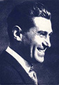
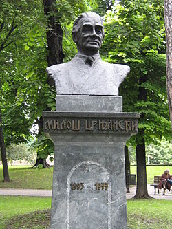

Miloš Crnjanski (Čongrad, 26. oktobar 1893 — Beograd, 30. novembar 1977) je u srpskoj literaturi XX veka jedan od onih njenih stvaralaca koji se kao pesnik, pripovedač, romansijer i publicista najglasnije javljao, najduže ćutao i u svom stvaranju postizao raznorodne vrednosti i rezultate. Od novinara čije se društveno-političko opredeljenje u jednom trenutku otvoreno suprostavilo slobodi i progresu, on se vremenom uzdigao do pesnika i romansijera najvišeg reda i time obeležio ne samo zanimljiv životni put, već i jedan prekretnički period novije srpske književne istorije. Bavio se i likovnom kritikom.
Crnjanski je rođen 26. oktobra 1893. godine u Čongradu, u Austrougarskoj (danas Mađarskoj), u osiromašenoj građanskoj porodici. Otac Toma bio je niži činovnik koji je zbog svog temperamentnog zastupanja srpske manjinske politike "prognan" iz Banata, iz Ilandže (koju je Crnjanski nazivao Ilančom, po njenom starom nazivu) u Čongrad. Majka mu se zvala Marija Vujić i bila je rodom iz Pančeva. Miloš Crnjanski je od 1896. odrastao u Temišvaru, u patrijarhalno-rodoljubivoj sredini koja će mu kult Srbije i njene prošlosti usaditi u dušu kao najdražu relikviju. Najdublje i najtrajnije senzacije svojih dečjih i dečačkih godina doživljavao je u tipično srpskim nacionalnim i verskim sadržajima: crkvena škola, ikona svetoga Save, tamjan, pravoslavno srpsko groblje sa ritualom sahrane i zadušnica, večernje priče i pesme o Srbiji, hajdučiji i nabijanju na kolac - sve se to u dečakovim emocijama pretvaralo u trajan nemir i nepresušan izvor nada, radosti, sumnji, razočaranja i podizanja.
Miloš Crnjanski je osnovnu školu završio u srpskoj veroispovednoj školi kod učitelja Dušana Berića u Temišvaru. Maturirao je u temišvarskoj gimnaziji kod katoličkih fratara pijarista.
Godine 1913. upisao je studije medicine u Beču koje nikada neće završiti.
Prvu pesmu "Sudba" Crnjanski objavljuje u somborskom dečjem listu "Golub" 1908. godine. 1912. u sarajevskoj "Bosanskoj vili" štampane je njegova pesma "U početku beše sjaj".
Vest o ubistvu austrougarskog prestolonaslednika Franca Ferdinanda zatekla ga je u Beču. Na samom početku Prvog svetskog rata Crnjanski je doživeo odmazdu austrijskih vlasti zbog Principovih revolverskih hitaca u Sarajevu, ali umesto tamničkog odela obukli su mu uniformu austrougarskog vojnika i poslali ga na galicijski front da juriša na Ruse, gde je uskoro ranjen. Veći deo vremena od 1915. iz tih tragičnih ratnih dana Crnjanski provodi u samoći ratne bolnice u Beču, više uz miris jodoforma nego baruta, da bi se tek pred sam kraj rata obreo i na italijanskom frontu. U njegove uspomene neizbrisivo su se utisnuli prizori ratne pustoši. "... Front, bolnice, pa opet front, i ljubavi, svuda ljubavi, za hleb i za šećer, sve mokro, sve kiša i blato, magle umiranja" – to su bila viđenja života u kojima je sazrevao mladi Crnjanski.
1916. radi u Direkciji državnih železnica u Segedinu. Sledeće godine je vraćen u vojsku i prekomandovan u Komoran i Ostrogon. U Beču 1918. upisuje Eksportnu akademiju.
Trideset miliona nedužnih mrtvih ljudi našlo je mesta u antiratnim stihovima ovog nesrećnog mladog ratnika koje je on iz rata doneo u svojoj vojničkoj torbi, prvo u Zagreb, a zatim u Beograd, gde se najduže zadržao. 1919. u Beogradu se upisuje na Univerzitet gde studira književnost i uređuje list "Dan".
Crnjanski otada živi kao povratnik koji se, kao nesrećni Homerov junak, posle duge odiseje vraća na svoju Itaku. Međutim, dok je Odisej znao da sačuva bodrost duha i životnu čvrstinu, Crnjanski se, sa čitavom svojom generacijom, vratio u razorenu domovinu sa umorom i rezignacijom. "U velikom haosu rata – govorio je mladi pesnik – bio sam nepokolebljiv u svojim tugama, zamišljenosti i mutnom osećanju samoće". I u svojim ratnim i poratnim stihovima, ovaj umorni povratnik iskreno je pevao o svojoj rezignaciji i izgubljenim iluzijama. Iz tog potucanja po krvavim svetskim ratištima Crnjanski se vraća mislima o nužnosti rušenja lažnog mita o "večitim" vrednostima građanske etike.
I u poeziji i u životu on živi kao sentimentalni anarhist i umoran defetist koji sa tugom posmatra relikvije svoje mladosti, sada poprskane krvlju i poljuvane u blatu. Osećao se tada pripadnikom naprednih društvenih snaga i glasno se izjašnjavao za socijalizam, ali njegovo buntarstvo iz tih godina bila je samo "krvava eksplozija" nekog nejasnog društvenog taloga donesenog iz rata.
Književno stvaranje Miloša Crnjanskog u tom periodu bilo je krupan doprinos naporu njegove generacije da se nađe nov jezik i izraz za nove teme i sadržaje. Govoreći o literarnom programu svoje pesničke generacije, on je pisao: "Kao neka sekta, posle tolikog vremena, dok je umetnost zančila razbibrigu, donosimo nemir i prevrat, u reči, u osećaju, mišljenju. Ako ga još nismo izrazili, imamo ga neosporno o sebi. Iz masa, iz zemlje, iz vremena prešao je na nas. I ne dà se ugušiti... Prekinuli smo sa tradicijom, jer se bacamo strmoglavo u budućnost... lirika postaje strasna ispovest nove vere." Potpuno novim stihom i sa puno emocijalne gorčine on je tada kazivao svoj bunt, opevao besmislenost rata, jetko negirao vidovdanske mitove i sarkastično ismevao zabludu o "zlatnom veku" koji je obećavan čovečanstvu. Snagom svoje sugestivne pesničke reči on je mnoge vrednosti građanske ideologije pretvarao u ruševine, ali na tim ruševinama nije mogao niti umeo da vidi i započne novo. Crnjanski je i u stihu i u prozi tih poratnih godina bio snažan sve dok je u njemu živeo revolt na rat.
1920. upoznaje se sa Vidom Ružić sa kojom će se 1921. i venčati. Iste godine Crnjanski sa Vidom odlazi u Pariz i Bretanju, a u povratku putuje po Italiji. 1922. je bio nastavnik u pančevačkoj gimnaziji, iste godine je stekao diplomu na Filozofskom fakultetu u Beogradu.
Između 1923. i 1926. profesor je gimnazije u Beogradu i saradnik uglednog lista "Politika". Istovremeno, izdaje "Antologiju kineske lirike" i novinar je ulistu "Vreme". 1927. u "Srpskom književnom glasniku" izlaze prvi nastavci njegovog romana "Seobe".
1928 — 1929. je ataše za štampu pri Ambasadi Kraljevine Jugoslavije u Berlinu. Na njegov poziv nemačku prestonicu posećuje njegov prijatelj književnik Veljko Petrović.
1930. za roman "Seobe" dobija nagradu Srpske akademije nauka. Sledećih godina putuje brodom po Sredozemnom moru i izveštava iz Španije.
Godine 1934. pokreće list "Ideje" koji sledeće godine prestaje da izlazi.
U periodu između 1935. i 1941. radi u diplomatskoj službi u Berlinu i Rimu. Po izbijanju Drugog svetskog rata evakuisan je iz Rima i preko Madrida i Lisabona avgusta 1941. odlazi u London. Kao protivnik Tita i komunističke ideologije ostaje u Londonu i živi u emigraciji. Ovde radi razne poslove. Knjigovođa je obućarske radnje Helstern na Bond stritu i raznosi knjige firme Hačards na londonskom Pikadiliju, dok njegova supruga šije lutke i haljine za robnu kuću Herods. Crnjanski usput stiče diplomu Londonsog univerziteta i diplomu za hotelijerstvo i menadžerstvo.
Miloš Crnjanski je u Londonu bio član međunarodnog PEN-kluba koji mu obezbeđuje da se na mašini otkucaju njegovi romani.
Drugi svetski rat i dugi niz poratnih godina Crnjanski je proveo u emigraciji u Londonu, gde 1951. uzima britansko državljanstvo. U Jugoslaviju se vratio 1965. godine. Isprva je stanovao u beogradskom hotelu "Ekscelzior" u blizini Skupštine. U traganju za obalama svoga života, on je s radošću ugledao Beograd koji je u njegovoj nostalgiji blistao "kao kroz suze ljudski smeh". U stihovima posvećenim Beogradu on je potresno i nadahnuto izrazio svoja osećanja povratnika sa duge životne odiseje:
У теби нема бесмисла и смрти...
Ти и плач претвараш као дажд у шарене дуге.
------------------------------------------
А кад дође час, да ми се срце старо стиша,
твој ће багрем пасти не ме као киша.
(Ламент над Београдом)
U Beogradu je i preminuo 30. novembra 1977. godine.
Crnjanski je objavio veliki broj dela sa raznim temama i sadržajima:
Poezija
Manje su poznata dva predratna romana Miloša Crnjanskog (preštampavana i posle rata) - "Kap španske krvi" i "Suzni krokodil" (nedovršen). Njegovo učešće u stvaranju i objavljivanju kontroverznog romana "Podzemni klub" je sporno. U poslednje vreme su sve vidljivija nastojanja da se Crnjanskovo dvotomno delo "Kod Hiperborejaca" (žanrovski teško odredivo) stavi u ravnopravan položaj sa ostalim njegovim velikim romanima. Rukopis prvog romana Miloša Crnjanskog - "Sin Don Kihotov" - je, nažalost, izgubljen. (Pisac ga je bio poslao časopisu "Brankovo kolo".) Po "Romanu o Londonu" snimljena je 1988. istoimena mini serija.
Pored toga, objavio je nekoliko knjiga reportaža i dve antologije lirike istočnih naroda.